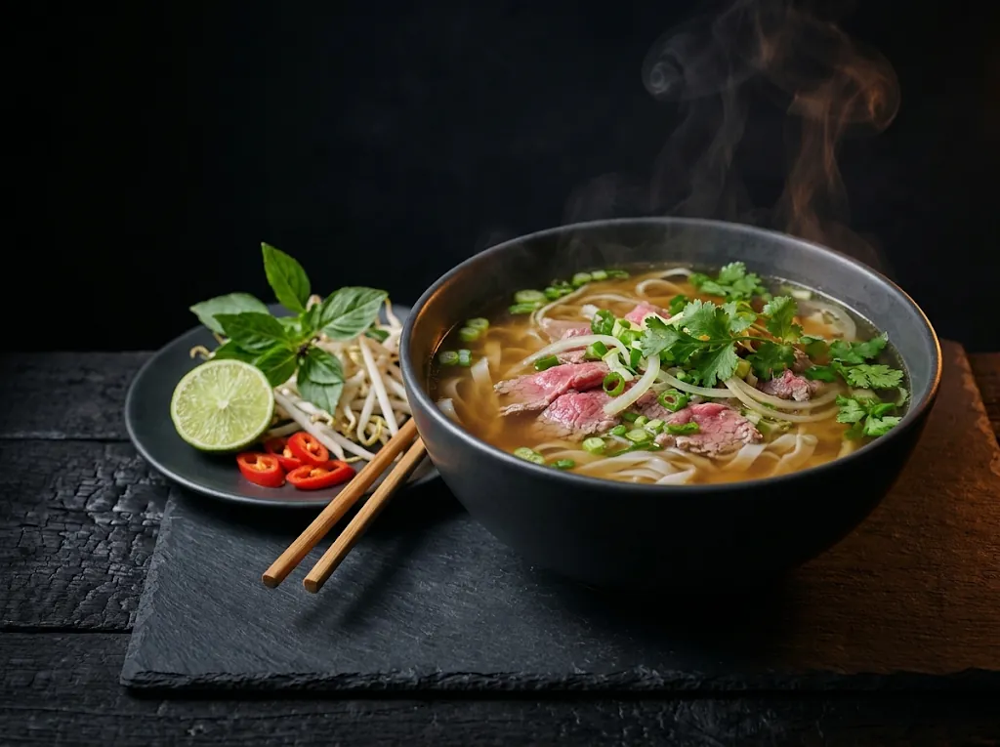
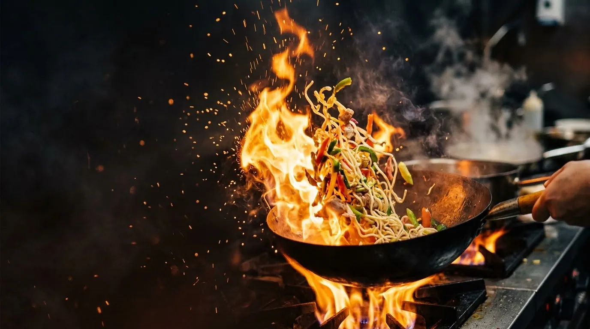
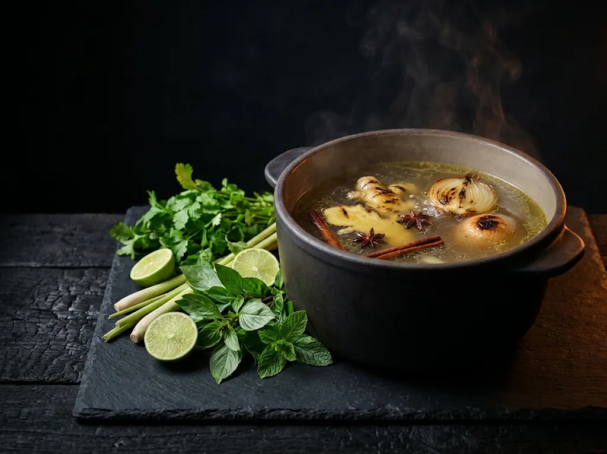
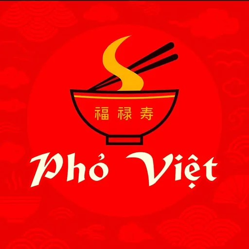
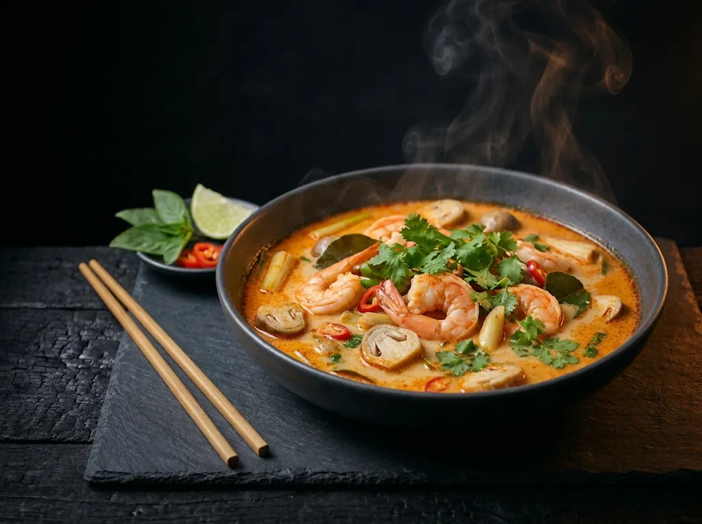
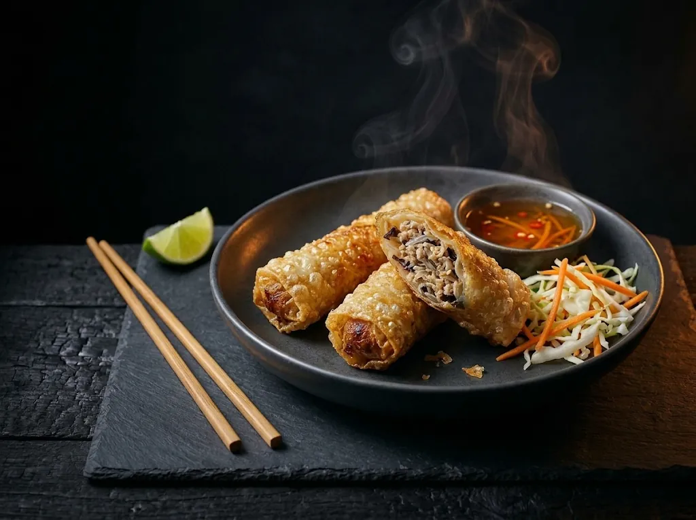
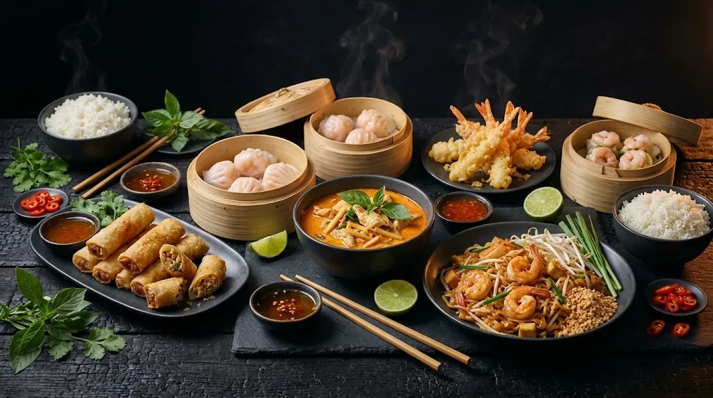

Nr 01 • Klasyk HanoiZupa Pho Bo
Wywar wołowy gotowany 8 godzin, makaron ryżowy, wołowina i świeże zioła.
20 / 29 zł
Od 8-godzinnego wywaru wołowego z przyprawami korzennymi, przez chrupiące sajgonki, po dania smażone na żywym ogniu. Sprawdź naszą pełną kartę dań z cenami i zamów telefonicznie lub odwiedź nas przy ul. 3 Maja 20K.


W Pho Viet wierzymy, że sekret kuchni wietnamskiej i tajskiej tkwi w cierpliwości oraz jakości składników. Nasz bulion do zupy Pho gotujemy powoli przez 8 godzin na kościach wołowych z prażonym imbirem, anyżem gwiaździstym, cynamonem i kardamonem.
Głęboki, naturalnie klarowny bulion bez sztucznych wzmacniaczy.
Wysoka temperatura zamyka soczystość mięsa i chrupkość warzyw.
Kolendra, mięta, trawa cytrynowa i limonka dodawane tuż przed podaniem.


Planujesz wizytę w naszym lokalu przy ul. 3 Maja 20K w Oławie lub chcesz odebrać ciepły posiłek bez czekania w kolejce? Zadzwoń bezpośrednio na kuchnię.
Zamówienia telefoniczne na odbiór osobisty przyjmujemy przez cały czas otwarcia restauracji.
Najszybszym sposobem na odbiór osobisty w Oławie jest telefon pod numer 788 299 666 — przygotujemy dania dokładnie na ustaloną godzinę. Jeśli wolisz dostawę pod drzwi z płatnością online, skorzystaj z naszych oficjalnych profili na Pyszne.pl oraz Uber Eats.
Tak! Większość naszych dań z woka (w tym chrupiący kurczak, Pad Thai czy makaron Udon) jest domyślnie łagodna, a chili podajemy osobno. W zakładce Wege & Napoje znajdziesz także szeroki wybór dań ze smażonym tofu, grzybami mun i świeżymi warzywami.
Restauracja Pho Viet mieści się przy ul. 3 Maja 20K w Oławie. Zapraszamy zarówno na spokojny obiad na sali, jak i po szybki odbiór zamówień na wynos. W pobliżu lokalu dostępne są wygodne miejsca postojowe.
Oczywiście. Przygotowujemy zestawy korytek bankietowych, półmiski sajgonek, pierożków Hakao oraz gorące dania z woka w podgrzewaczach na spotkania rodzinne i firmowe w Oławie i okolicach. Szczegóły znajdziesz w zakładce Catering.
55-200 Oława, woj. dolnośląskie. Zapraszamy codziennie na świeżo gotowaną zupę Pho, dania z woka i chrupiące przystawki.

Organizujesz urodziny, spotkanie firmowe lub rodzinny obiad? Przygotujemy gorące półmiski dań z woka, chrupiące sajgonki, pierożki Hakao oraz zestawy wegańskie dopasowane do liczby gości.
Chrupiące sajgonki wietnamskie, pierożki krewetkowe Hakao na parze, krewetki w tempurze oraz domowe sosy słodko-pikantne.
Chrupiąca kaczka po tajsku, kurczak w zielonym curry, wołowina z czarnym pieprzem oraz makaron Pad Thai podawane z ryżem jaśminowym.
Smażone tofu w pięciu smakach, warzywa z woka z grzybami mun, wegański Pad Thai oraz sajgonki warzywne.